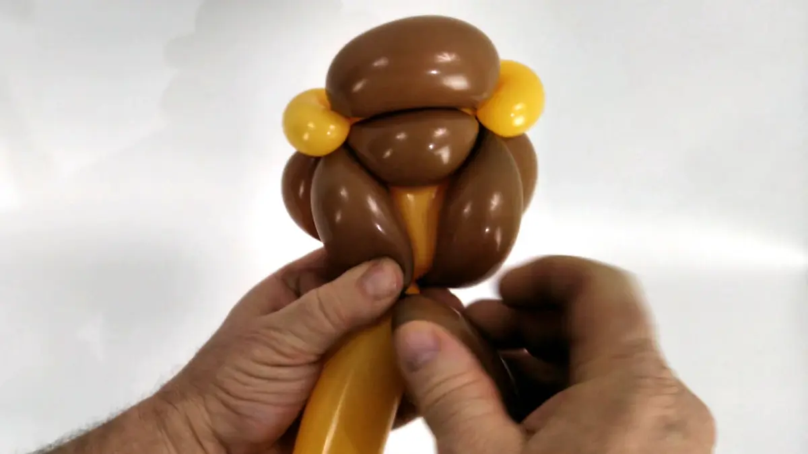
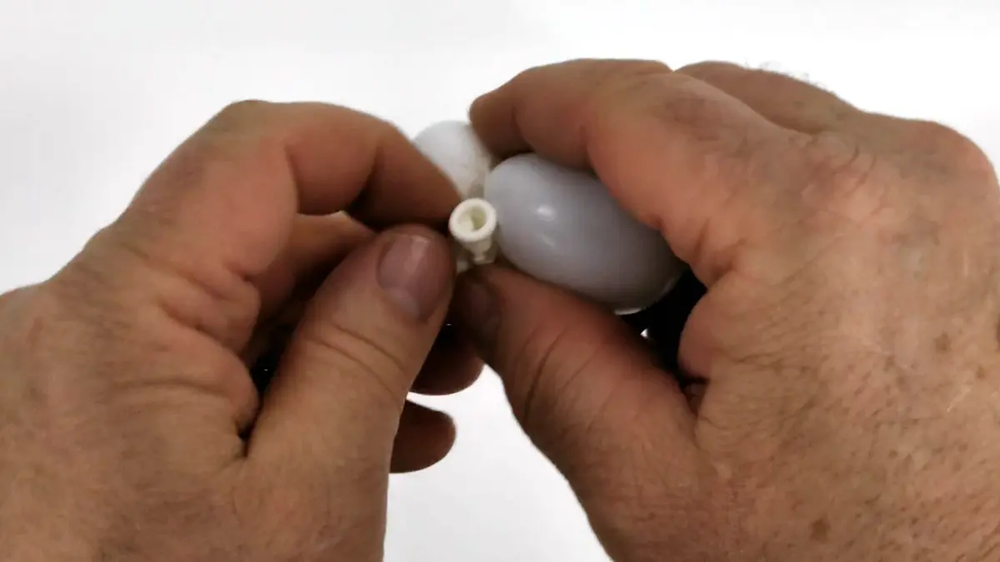

Comme la sculpture de la licorne qui calquait celle du cheval, avec quelques ajouts et un autre choix de couleur, cette sculpture du lion en ballon sera calquée sur celle du tigre. Sauf que nous utiliserons une couleur différente et nous lui rajouterons une crinière.
C'est un point important car en progressant et en assimilant bien les bases de la sculpture sur ballon, vous aurez l'occasion de revisiter vos anciens modèles en les modifiant pour en créer de nouveaux. Le lion, tout comme la licorne, est un parfait exemple de ce concept de recyclage.
(D'ailleurs, avant de démarrer ce tutoriel, il pourrait être judicieux de revoir celui du tigre : comment faire un tigre en ballon)
1- Le ballon jaune devra être gonflé comme le ballon orange du tigre, le ballon marron sera gonflé beaucoup moins, et le ballon blanc, si disponible, sera très peu gonflé.2- Attachez ensemble le ballon jaune et le ballon marron à leur base.3- Commencer avec le ballon jaune et, comme pour le tigre, faire une bulle assez large,4- suivie par une bulle un peu plus petite,5- puis à nouveau une bulle plus large,6- puis à nouveau une bulle un peu plus petite,7- et pour terminer cette première série de bulle, une plus large.8- Bloquer cette série des bulles ensemble à leur base.9 - Une fois le tout stabilisé, former une nouvelle petite bulle avec le ballon jaune,10- suivie par une bulle plus large.11- Prendre la plus grande des deux bulles jaune,12- et la pousser à travers la première série de bulle jaune,13- de sorte qu'elle se retrouve de l'autre coté.14- Prendre ensuite l'une des petites bulles de la première série de bulles.15- la pincer, et la transformer en bulle-oreille. 16- Prendre ensuite l'autre petite bulle de la première série de bulles.17- et de même, la transformer en bulle-oreille.18- À ce stade, on obtient une tête qui ressemble comme deux gouttes d'eau à celle d'un tigre !19- C'est la crinière qui fera toute la différence. Former maintenant une petite bulle avec le ballon marron,20- et la transformer en bulle-oreille.21- Voilà !22- Aligner ensuite le reste du ballon marron contre l'une des joues du lion,23- et pincer le ballon marron au niveau de l'oreille afin de pouvoir l'enrouler autour de la base de cette oreille,24- effectuer plusieurs tours avec le ballon marron, afin de sécuriser parfaitement l'attache.25- Ensuite, aligner le reste du ballon marron le long du front du lion,26- et pincer le ballon marron au niveau de la seconde oreille afin de pouvoir l'enrouler autour,27- effectuer plusieurs tours autour de la seconde oreille avec le ballon marron, afin de sécuriser parfaitement l'attache.28- Aligner ensuite le reste du ballon marron contre la seconde joue du lion,29- et pincer le ballon marron au niveau de la petite bulle-oreille confectionnée précédemment; afin de pouvoir l'enrouler autour,30- là encore, effectuer plusieurs tours avec le reste de ballon marron, afin de sécuriser parfaitement l'attache.31- Reprendre maintenant le ballon jaune et faire une bulle un peu large pour former le cou du lion (mais pas trop longue quand même... ce n'est pas une girafe !!)32- Une fois la bulle formée, il faut bien la bloquer entre deux doigts afin qu'elle ne puisse pas se défaire lors de la prochaine étape.33- Tout en maintenant l’extrémité de la bulle jaune coincée entre vos doigts, faire une (bien) plus petite bulle marron,34- positionner les deux bulles l'une contre l'autre,35- et bloquer leurs deux extrémités ensemble solidement.36- Aligner ensuite le reste du ballon marron derrière la tête du lion et le pincer au niveau de l'une des oreilles,37- afin de pouvoir l'enrouler autour de l'oreille. Aligner ensuite à nouveau le reste du ballon marron le long du front du lion.38- Pincer le ballon marron au niveau de l'autre oreille et effectuer plusieurs tours autour afin de bien sécuriser l'attache, comme précédemment,39- aligner ensuite le reste du ballon marron vers la base du cou et pincer pour former une bulle allongée,40- et enrouler son extrémité à la base du cou pour bien la bloquer.41- former ensuite une dernière bulle marron de la même longueur que la précédente, puis percer l'extrémité du reste de ballon marron afin que l'air puisse s'en échapper,42- bien entendu, l'air ne doit pas s'échapper de la bulle elle-même, mais seulement du surplus de ballon marron,43- auquel faire un nœud44- Loger cette dernière bulle dans l'espace situé entre les autres bulles marrones, derrière le cou du lion.45- Tirer le surplus non-gonflé du ballon marron à traver les deux bulles marron qui couvrent le front du lion,46- et l'attacher à l'une des deux oreilles afin de bloquer la dernière bulle en place.47- Voici la tête du lion, vue de dos...48- et vue de face.49- Ce qui reste à faire sera très facile : un corps parfaitement identique à celui du tigre, ou du chien d'ailleurs50- Une première bulle saucisse pour la première patte avant,51- et une seconde bulle de la même taille pour l'autre patte avant.52- Qu'il faudra bloquer ensemble à leur base.53- Une bulle un peu plus courte pour le ventre,54- puis une bulle pour la première patte arrière, qui devra être de la même longueur que celle des pattes avant,55- et faire de même pour la seconde patte arrière.56- Bloquer les deux pattes arrière ensemble à leur base.57- Faire passer la queue formée par le reste du ballon jaune à travers les deux pattes arrière, afin de les sécuriser et les empêcher de se défaire.58- Et enfin, donner une forme ondulée, plus naturelle, à la queue du lion.59- Si vous le désirez vous arrêter à ce stade, ou si vous n'avez pas de ballon blanc sous la main, vous pouvez tout simplement dessiner des yeux sur le front jaune du lion !60- Mais autrement, pour les yeux, prendre le ballon blanc et faire une minuscule petite bulle,61- suivie par une seconde,62- identique à la première.63- Tirer sur le nœud du ballon blanc,64- et, dans un premier temps, faire tourner la partie non-gonflée du ballon blanc sous ce nœud, puis plusieurs fois entre les deux bulles blanches, en serrant bien.65- Percer l'extrémité du ballon blanc pour laisser s’échapper l'air,66- prendre le segment dégonflé du ballon blanc,67- et faire un nœud avec l'autre segment de ballon blanc.68- Couper les longueurs de ballon dégonflé au raz du nœud.69- Faire passer l'une des petites bulles blanche entre les deux bulles jaunes qui forme la bouche et le nez du lion,70- puis repousser les deux petites bulles blanche vers le haut, pour les positionner contre le front du lion,71- les deux petites bulles blanches doivent bien ressortir à la base de grande bulle jaune.72- Il suffit maintenant de dessiner les yeux, et les autres détails de la tête du lion.Et voilà ! À bientôt ! Pour une autre leçon... avec Môssieur Ballon !